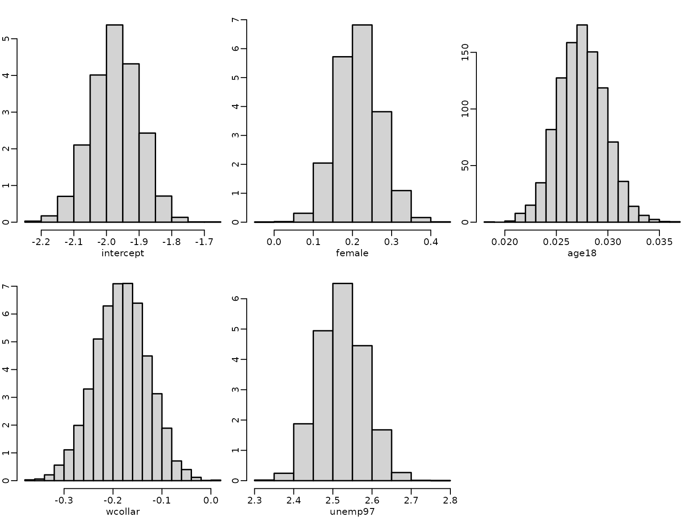
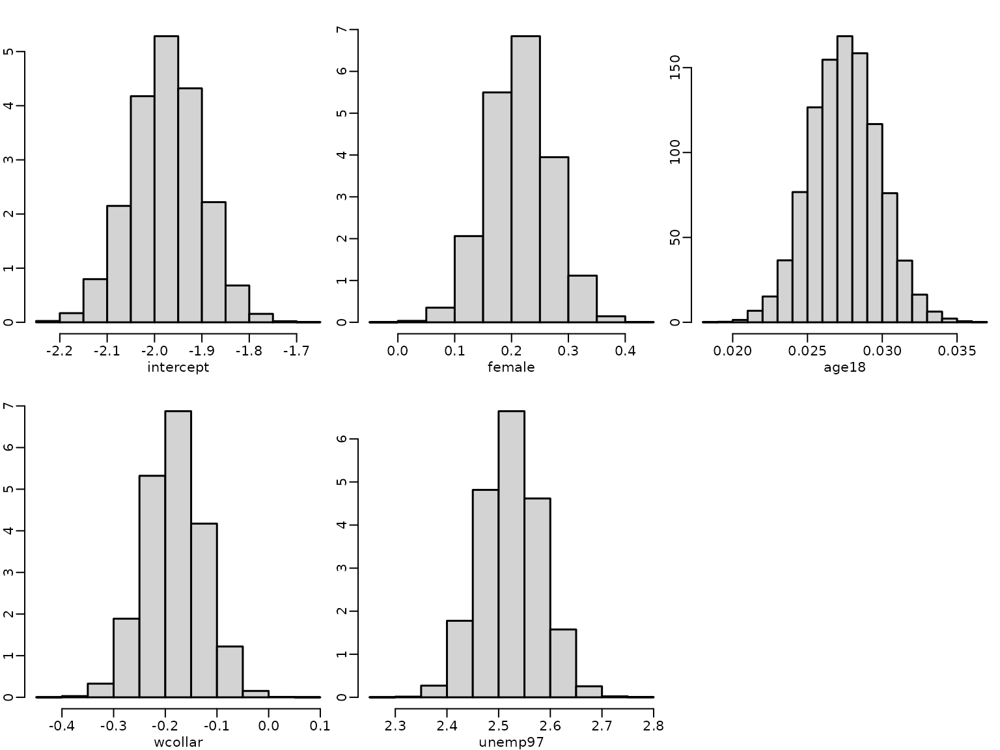
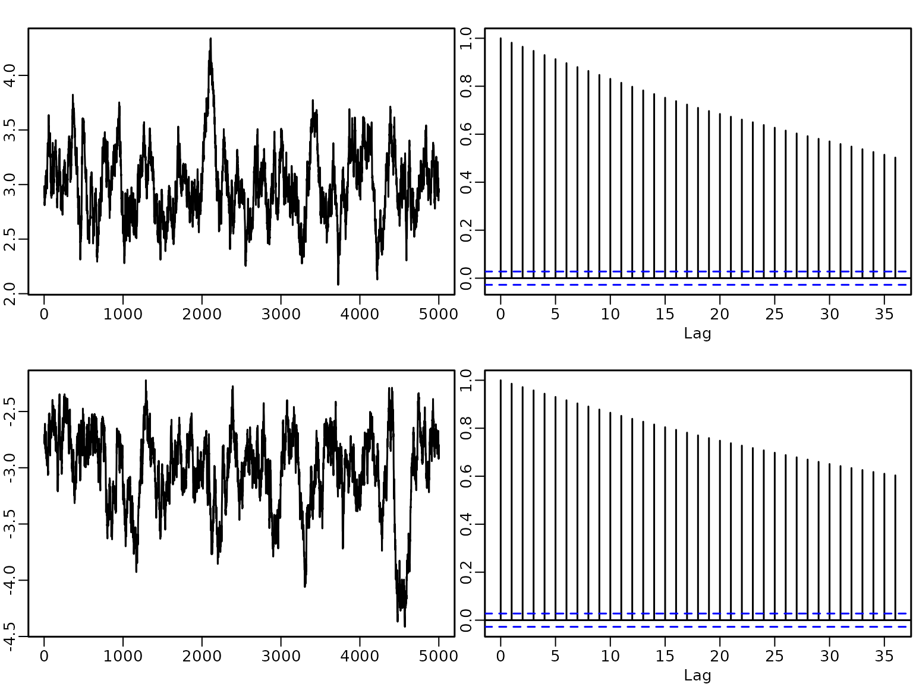
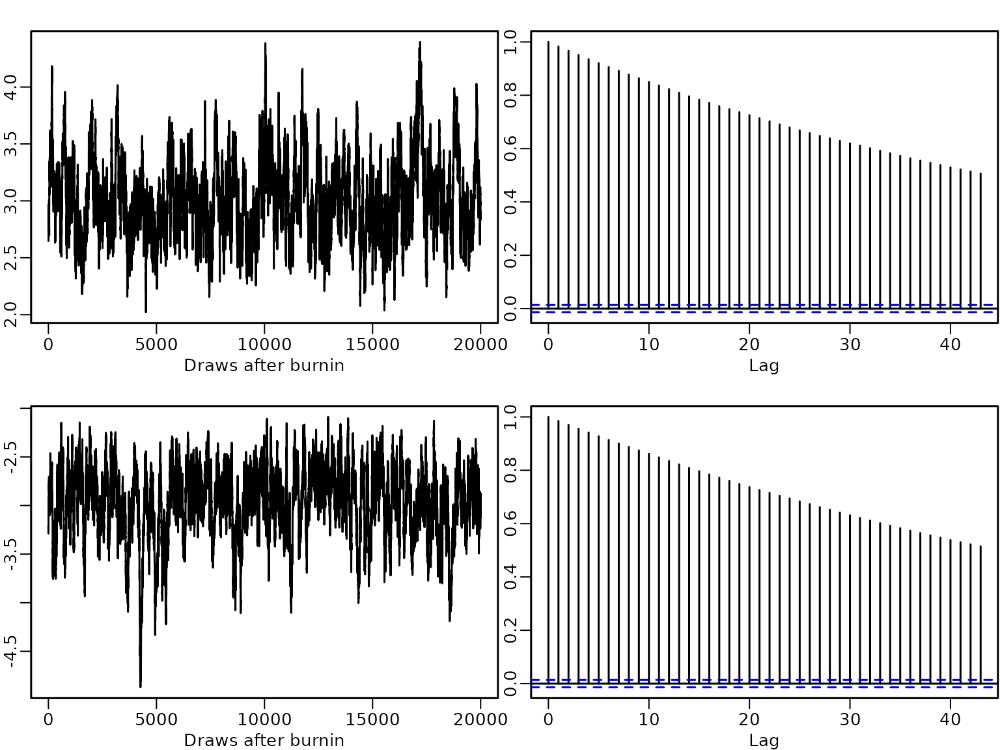
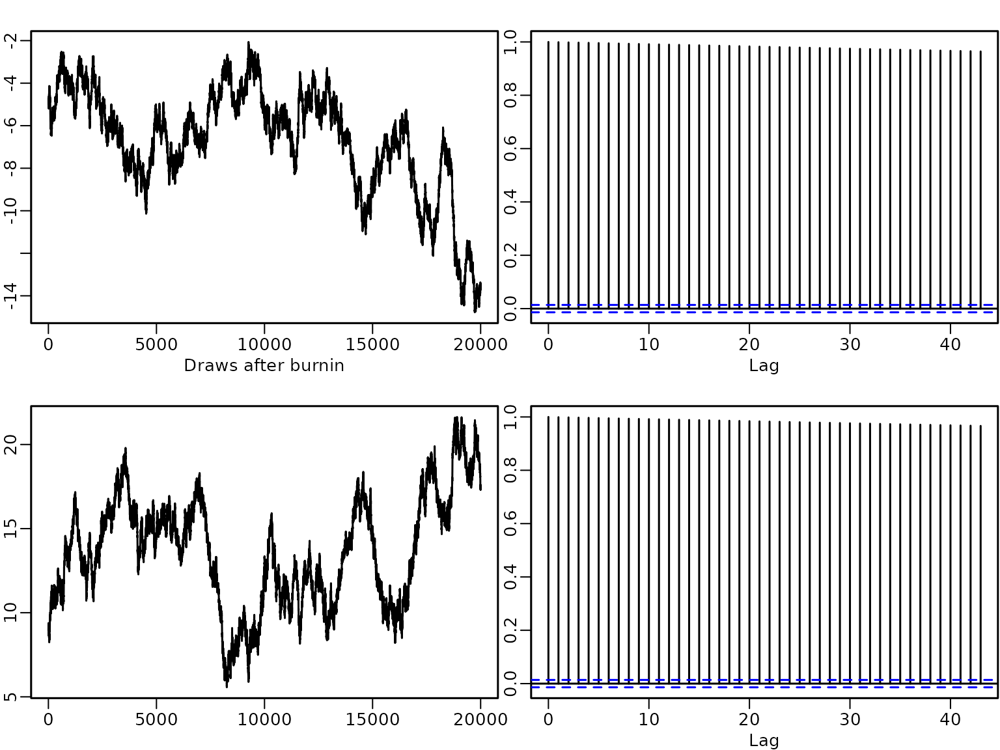
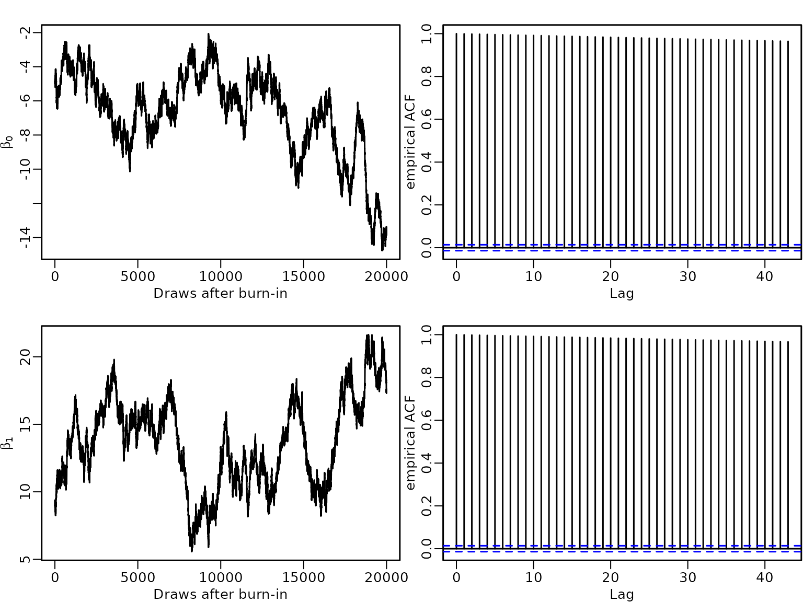

Chapter 8: Beyond Standard Regression Analysis
Chapter08.RmdSection 8.1: Binary response variables
Example 8.1: Labour market data
We illustrate probit regression analysis for the labor market data.
library("BayesianLearningCode")
data("labor", package = "BayesianLearningCode")We model the binary variable unemployment as dependent variable and use as covariates the variables female (binary), wcollar (binary), age18 (quantitative, centered at 18 years) and unemployed in 1997 (binary). The baseline person is hence an 18 year old male blue collar worker who was employed in 1997.
y.unemp <- labor$income_1998 == "zero"
N.unemp <- length(y.unemp) # number of observations
X.unemp <- with(labor, cbind(intercept = rep(1, N.unemp),
female = female,
age18 = 1998 - birthyear -18,
wcollar = wcollar_1997,
unemp97 = income_1997 == "zero")) # regressor matrixThe regression coefficients are estimated using data augmentation and Gibbs sampling. We define a function yielding posterior draws using the algorithm detailed in Chapter 8.1.1.
probit <- function(y, X, b0 = 0, B0 = 10000,
burnin = 1000L, M = 5000L) {
N <- length(y)
d <- ncol(X) # number regression effects
B0.inv <- diag(rep(1/B0, length.out = d), nrow = d)
b0 <- rep(b0, length.out = d)
B0inv.b0 <- B0.inv %*% b0
betas <- matrix(NA_real_, nrow = M, ncol = d)
colnames(betas) <- colnames(X)
# define quantities for the Gibbs sampler
BN <- solve(B0.inv + crossprod(X))
ind0 <- (y == 0) # indicators for zeros
ind1 <- (y == 1) # indicators for ones
# starting values
beta <- rep(0, d)
z <- rep(NA_real_, N)
for (m in seq_len(burnin + M)) {
# Draw z conditional on y and beta
u <- runif(N)
eta <- X %*% beta
pi <- pnorm(eta)
z[ind0] <- eta[ind0] + qnorm(u[ind0] * (1 - pi[ind0]))
z[ind1] <- eta[ind1] + qnorm(1 - u[ind1] * pi[ind1])
# sample beta from the full conditional
bN <- BN %*% (B0inv.b0 + crossprod(X, z))
beta <- t(mvtnorm::rmvnorm(1, mean = bN, sigma = BN))
# Store the beta draws
if (m > burnin) {
betas[m-burnin, ] <- beta
}
}
return(betas)
}We specify the prior on the regression effects as a rather flat Normal independence prior and estimate the model.
set.seed(1234)
betas <- probit(y.unemp, X.unemp, b0 = 0, B0 = 10000)To compute summary statistics from the posterior we use the following function.
res.mcmc <- function(x, lower = 0.025, upper = 0.975) {
y <- c(quantile(x, lower), mean(x), quantile(x, upper))
names(y) <- c(paste0(lower * 100, "%"), "Mean", paste0(upper * 100, "%"))
y
} | intercept | female | age18 | wcollar | unemp97 | |
|---|---|---|---|---|---|
| 2.5% | -2.123 | 0.109 | 0.023 | -0.292 | 2.412 |
| Mean | -1.973 | 0.214 | 0.027 | -0.183 | 2.523 |
| 97.5% | -1.831 | 0.325 | 0.032 | -0.080 | 2.639 |
(p_unemploy_base <- pnorm(res_beta[1, 2]))
#> [1] 0.5432806The estimated risk of unemployment for a baseline person is low and it is even lower for a white collar worker. It is higher for females, older persons and particularly for those unemployed in 1997.
for (j in seq_len(ncol(betas))) {
hist(betas[, j], freq = FALSE, main = "", xlab = colnames(betas)[j],
ylab = "")
}
A plot of the autocorrelation of the draws shows that although there is some autocorrelation, it vanishes after a few lags.
for (j in seq_len(ncol(betas))) {
acf(betas[, j], main = "", xlab = colnames(betas)[j], ylab = "")
} The sampler is easy to implement, however there might be problems when the response variable contains either only few or very many successes. To illustrate this issue, we use data where in trials only 1 success or only 1 failure is observed.
N <- 500
X <- matrix(1, nrow = N)
y1 <- c(0, rep(1, N-1))
betas1 <- probit(y1, X, b0 = 0, B0 = 10000)
y2 <- c(rep(0, N-1), 1)
betas2 <- probit(y2, X, b0 = 0, B0 = 10000) In both cases the autocorrelation of the draws decreases very slowly.
plot(betas1, type = "l", main = "", xlab = "", ylab = "")
acf(betas1)
plot(betas2, type = "l", main = "", xlab = "", ylab = "")
acf(betas2)
High autocorrelated draws in probit models not only occur if successes or failures are very rare, but also when a covariate (or a linear combination of covariates) perfectly allows to predict successes and/or failures. Complete separation means that both successes and failures can be perfectly predicted by a covariate, whereas with quasi-complete separation only either successes or failures can be predicted perfectly.
To illustrate posterior sampling, in the case of complete separation, we simulate observations with 10 successes and 490 failures. We add a binary predictor where for we observe only successes and for only failures.
N <- 500
ns <- 10
x <- rep(c(1, 0), c(ns, N-ns))
y <- rep(c(1, 0), c(ns, N-ns))
table(y, x)
#> x
#> y 0 1
#> 0 490 0
#> 1 0 10We estimate the model parameters and plot the ACF of the draws. Again the autocorrelations remain high even for lag 35.
X <- cbind(rep(1, N), x)
betas <- probit(y, X, b0 = 0, B0 = 10000)
plot(betas[, 1], type = "l", main = "", xlab = "", ylab = "")
acf(betas[, 1])
plot(betas[, 2], type = "l", main = "", xlab = "", ylab = "")
acf(betas[, 2])
Finally we simulate another data set of observations with 10 successes and 490 failures. In this data for only successes but for successes as well as failures are observed and hence there is quasi-separation.
N <- 500
x <- rep(c(1, 0), c(ns, N-ns))
y <- rep(c(1, 0), each = N/2)
table(y, x)
#> x
#> y 0 1
#> 0 250 0
#> 1 240 10A plot of the acf of the draws shows low autocorrelation for the intercept but autocorrelations for the covariate effect are again high.
X <- cbind(rep(1, N), x)
betas <- probit(y, X, b0 = 0, B0 = 10000)
plot(betas[, 1], type = "l", main = "", xlab = "", ylab = "")
acf(betas[, 1])
plot(betas[, 2], type = "l", main = "", xlab = "", ylab = "")
acf(betas[, 2])
High autocorrelations typically indicate problems with the sampler. If there is complete or quasi-complete separation in the data, the likelihood is monotone and the maximum likelihood estiamte does not exist. In a Bayesian approach using a flat, improper prior on the regression effects will result in an improper posterior distribution. Hence, a proper prior is required to avoid improper posteriors in case of separation.
In the examples above we used a proper prior which is rather flat. With a more informative prior, the autocorrelations of the draws are lower. This can be seen in the next figure, where the simulated data under quasi-separation are re-analyzed with a Normal prior that is tighter around zero.
betas <- probit(y, X, b0 = 0, B0 = 2.5^2)
plot(betas[, 1], type = "l", main = "", xlab = "", ylab = "")
acf(betas[, 1])
plot(betas[, 2], type = "l", main = "", xlab = "", ylab = "")
acf(betas[, 2])
Example 8.4: Labour market data
We now estimate a logistic regression model for the labor market data using the two-block Polya-Gamma sampler.
logit <- function(y, X, b0 = 0, B0 = 10000,
burnin = 1000L, M = 5000L) {
N <- length(y)
d <- ncol(X) # number regression effects
B0.inv <- diag(rep(1/B0, length.out = d), nrow = d)
b0 <- rep(b0, length.out = d)
B0inv.b0 <- B0.inv %*% b0
betas <- matrix(NA_real_, nrow = M, ncol = d)
colnames(betas) <- colnames(X)
# define quantities for the Gibbs sampler
ind0 <- (y == 0) # indicators for zeros
ind1 <- (y == 1) # indicators for ones
# starting values
beta <- rep(0, d)
z <- rep(NA_real_, N)
omega <-rep(NA_real_, N)
for (m in seq_len(burnin+M)) {
# Draw z conditional on y and beta
eta <- X %*% beta
pi <- plogis(eta)
u <- runif(N)
z[ind0] <- eta[ind0] + qlogis(u[ind0]*(1-pi[ind0]))
z[ind1] <- eta[ind1] + qlogis (1-u[ind1]*pi[ind1])
# Draw omega conditional on y, beta and z
omega <- pgdraw::pgdraw(b = 1, c = z-eta)
# sample beta from the full conditional
Xomega <- matrix(omega, ncol = d, nrow = N) * X
BN <- solve(B0.inv + crossprod(Xomega, X))
bN <- BN %*% (B0inv.b0 + crossprod(Xomega, z))
beta <- t(mvtnorm::rmvnorm(1, mean = bN, sigma = BN))
# Store the beta draws
if (m > burnin) {
betas[m-burnin, ] <- beta
}
}
return(betas)
}We again use the flat independence Normal prior on the regression effects and estimate the model.
betas_logit <- logit(y.unemp, X.unemp, b0 = 0, B0 = 10000)
print(str(betas_logit))
#> num [1:5000, 1:5] -3.32 -3.43 -3.57 -3.53 -3.68 ...
#> - attr(*, "dimnames")=List of 2
#> ..$ : NULL
#> ..$ : chr [1:5] "intercept" "female" "age18" "wcollar" ...
#> NULL
res_beta_logit <- apply(betas_logit, 2, res.mcmc)
knitr::kable(round(res_beta_logit, 3))| intercept | female | age18 | wcollar | unemp97 | |
|---|---|---|---|---|---|
| 2.5% | -4.072 | 0.133 | 0.044 | -0.611 | 4.091 |
| Mean | -3.659 | 0.399 | 0.056 | -0.344 | 4.370 |
| 97.5% | -3.281 | 0.658 | 0.067 | -0.067 | 4.669 |
(p_unemploy_base <- plogis(res_beta_logit[1, 2]))
#> [1] 0.5332866Note that the logistic distribution has a variance of and hence the regression effects are absolutely larger than in the probit model. However any probability computed from the two models will be very close, e.g., compare the probability to be unemployed for the baseline person.
We can compare the posterior estimates of the coefficients in the probit model those of of logit model by multiplying them with and see that there is not much difference.
| intercept | female | age18 | wcollar | unemp97 | |
|---|---|---|---|---|---|
| 2.5% | -3.851 | 0.197 | 0.042 | -0.529 | 4.376 |
| Mean | -3.578 | 0.388 | 0.050 | -0.331 | 4.575 |
| 97.5% | -3.321 | 0.589 | 0.058 | -0.145 | 4.787 |
Section 8.2: Count response variables
Example 8.5: Road safety data
We fit two different Poisson regression models:
a small model with intercept, intervention effect and holiday dummy (activated in July/August);
a large model with intercept, intervention effect, linear trend, and a seasonal pattern captured by monthly dummies.
The sampler performance for these two models is assessed to study how the acceptance rate deteroriates, if increases.
We load the data and extract the observations for the children in Linz.
data("accidents", package = "BayesianLearningCode")
y <- accidents[, "children_accidents"]
e <- rep(1, length(y))Then, we define the regressor matrix.
X <- cbind(intercept = rep(1, length(y)),
intervention = rep(c(0, 1), c(7*12+9, 8*12+3)),
holiday = rep(rep(c(0, 1, 0), c(6, 2, 4)), 16))To compute the parameters of the Normal proposal density, we use the Newton-Raphson estimator described in Section 8.2.1.
gen.proposal.poisson <- function(y, X, e, b0 = 0, B0 = 100, t.max = 30) {
N <- length(y)
d <- ncol(X)
betas <- matrix(NA_real_, ncol = t.max, nrow = d)
beta.old <- c(log(mean(y)), rep(0, d-1))
b0 <- rep(b0, length.out = d)
B0.inv <- diag(rep(1/B0, length.out = d), nrow = d)
for (t in 1:t.max) {
rate <- e * exp(X %*% beta.old)
score <- t(crossprod(y - rate, X) - (beta.old - b0) %*% B0.inv)
H <- -B0.inv
for (i in 1:N) {
H <- H - rate[i] * tcrossprod(X[i, ])
}
betas[, t] <- beta.old - solve(H, score)
}
qmean <- betas[, t.max]
# determine the variance matrix
rate <- e * exp(X %*% qmean)
H <- -B0.inv
for (i in 1:N) {
H <- H - rate[i] * tcrossprod(X[i, ])
}
qvar <- -solve(H)
return(parms.proposal = list(mean = qmean,
var = qvar))
}We use a flat Normal prior on the regression effects.
parms.proposal <- gen.proposal.poisson(y, X, e, b0 = 0, B0 = 100)
print(parms.proposal)
#> $mean
#> [1] 0.8867173 -0.3465599 -0.5944486
#>
#> $var
#> [,1] [,2] [,3]
#> [1,] 0.005121126 -0.0048204767 -0.0031235498
#> [2,] -0.004820477 0.0111451181 0.0002039249
#> [3,] -0.003123550 0.0002039249 0.0303637113Next we set up the independence Metropolis-Hastings algorithm and estimate the model parameters.
poisson <- function(y, X, e, b0 = 0, B0 = 100, qmean, qvar,
burnin = 1000L, M = 5000L) {
d <- ncol(X)
beta.post <- matrix(ncol = d, nrow = M)
colnames(beta.post) <- colnames(X)
acc <- numeric(length = M)
b0 <- rep(b0, length.out = d)
B0 <- diag(rep(B0, length.out = d), nrow = d)
beta <- as.vector(mvtnorm::rmvnorm(1, mean = qmean, sigma = qvar))
for (m in seq_len(burnin + M)) {
beta.old <- beta
beta.proposed <- as.vector(mvtnorm::rmvnorm(1, mean = qmean, sigma = qvar))
# compute log proposal density at proposed and old value
lq_proposed <- mvtnorm::dmvnorm(beta.proposed, mean = qmean, sigma = qvar,
log = TRUE)
lq_old <- mvtnorm::dmvnorm(beta.old, mean = qmean, sigma = qvar,
log = TRUE)
# compute log prior of proposed and old value
lpri_proposed <- mvtnorm::dmvnorm(beta.proposed, mean = b0, sigma = B0,
log = TRUE)
lpri_old <- mvtnorm::dmvnorm(beta.old, mean = b0, sigma = B0,
log = TRUE)
# compute loglikelihood of proposed and old value
lh_proposed <- dpois(y, e * exp(X %*% beta.proposed), log = TRUE)
lh_old <- dpois(y, e * exp(X %*% beta.old), log = TRUE)
maxlik <- max(lh_old, lh_proposed)
ll <- sum(lh_proposed - maxlik) - sum(lh_old - maxlik)
# compute acceptance probability and accept or not
log_acc <- min(0, ll + lpri_proposed - lpri_old + lq_old - lq_proposed)
if (log(runif(1)) < log_acc) {
beta <- beta.proposed
accept <- 1
} else {
beta <- beta.old
accept <- 0
}
# Store the beta draws
if (m > burnin) {
beta.post[m-burnin, ] <- beta
acc[m-burnin] <- accept
}
}
return(res = list(beta.post = beta.post, accept = mean(acc)))
}
res1 <- poisson(y, X, e, b0 = 0, B0 = 100,
qmean = parms.proposal$mean, qvar = parms.proposal$var)
res.poisson1 <- t(rbind(apply(res1$beta.post, 2, res.mcmc),
`exp(Mean)` = exp(colMeans(res1$beta.post))))
knitr::kable(round(res.poisson1, 3))| 2.5% | Mean | 97.5% | exp(Mean) | |
|---|---|---|---|---|
| intercept | 0.741 | 0.864 | 0.996 | 2.373 |
| intervention | -0.526 | -0.343 | -0.142 | 0.710 |
| holiday | -1.172 | -0.815 | -0.431 | 0.443 |
print(res1$accept)
#> [1] 0.3468We then fit an alternative model with intercept, intervention effect, linear trend and saisonal dummy variables.
seas <- rbind(diag(1, 11), rep(-1, 11))
seas.dummies <- matrix(rep(t(seas), 16), ncol = 11, byrow = TRUE)
colnames(seas.dummies) <- c("Jan", "Feb", "Mar", "Apr","May", "Jun", "Jul",
"Aug", "Sep", "Oct", "Nov")
X.large <- cbind(X,
lin.trend = 1:length(y),
seas.dummies)We set the prior parameters and compute parameters of the proposal distribution
parms.proposal2 <- gen.proposal.poisson(y, X.large, e, b0 = 0, B0 = 100)and fit the model.
res2 <- poisson(y, X.large, e, b0 = 0, B0 = 100,
qmean = parms.proposal2$mean, qvar = parms.proposal2$var)
res.poisson2 <- t(rbind(apply(res2$beta.post, 2, res.mcmc),
`exp(Mean)` = exp(colMeans(res2$beta.post))))
knitr::kable(round(res.poisson2, 3))| 2.5% | Mean | 97.5% | exp(Mean) | |
|---|---|---|---|---|
| intercept | -1.261 | 0.787 | 2.993 | 2.196 |
| intervention | -0.727 | -0.337 | 0.007 | 0.714 |
| holiday | -12.898 | -0.424 | 11.692 | 0.654 |
| lin.trend | -0.003 | 0.000 | 0.004 | 1.000 |
| Jan | -1.940 | 0.208 | 2.179 | 1.232 |
| Feb | -2.504 | -0.432 | 1.659 | 0.649 |
| Mar | -2.153 | 0.022 | 2.213 | 1.022 |
| Apr | -1.932 | 0.291 | 2.325 | 1.337 |
| May | -2.666 | -0.315 | 1.955 | 0.730 |
| Jun | -1.895 | 0.326 | 2.428 | 1.385 |
| Jul | -10.521 | -0.203 | 10.299 | 0.816 |
| Aug | -10.608 | -0.330 | 10.104 | 0.719 |
| Sep | -2.248 | -0.052 | 2.026 | 0.950 |
| Oct | -1.988 | 0.362 | 2.439 | 1.436 |
| Nov | -2.357 | -0.007 | 2.100 | 0.993 |
print(res2$accept)
#> [1] 0.1934
# xtable(res.poisson1, caption= "Count Data: estimation results for Model 1", label="res.count1", digits=3)
# xtable(res.poisson2, caption= "Count Data: estimation results for Model 2", label="res.count2", digits=3)Example 8.6: Road safety data
Now we analyse the road safety data allowing for unobserved heterogeneity. We first set up both the two versions of the three-block MH-within-Gibbs sampler
negbin <- function(y, X, e, b0 = 0, B0 = 100, qmean, qvar, pri.alpha,
full.gibbs= FALSE, burnin = 1000L, M = 50000L) {
N=length(y)
d <- ncol(X)
beta.post <- matrix(ncol = d, nrow = M)
colnames(beta.post) <- colnames(X)
b0 <- rep(b0, length.out = d)
B0 <- diag(rep(B0, length.out = d), nrow = d)
acc.beta <- numeric(length = M)
alpha.post<- rep(NA,M)
acc.alpha <-rep(NA,M)
c_alpha <- 0.1
# set starting values
beta <- as.vector(mvtnorm::rmvnorm(1, mean = qmean, sigma = qvar))
alpha <- pri.alpha$shape/pri.alpha$rate
phi <- rep(1.,N)
for (m in seq_len(burnin + M)){
# Step 1: draw beta
beta.old <- beta
beta.proposed <- as.vector(mvtnorm::rmvnorm(1, mean=qmean, sigma=qvar))
# compute log proposal density at proposed and old value
lq_proposed <- mvtnorm::dmvnorm(beta.proposed,mean=qmean, sigma=qvar,
log=TRUE)
lq_old <- mvtnorm::dmvnorm(beta.old, mean=qmean, sigma=qvar, log=TRUE)
# compute log prior of proposed and old value
lpri_proposed <- mvtnorm::dmvnorm(beta.proposed, mean=b0, sigma=B0,
log=TRUE )
lpri_old <- mvtnorm::dmvnorm(beta.old, mean=b0, sigma=B0, log=TRUE )
# compute log likelihood of proposed and old value
lh_proposed <- dpois(y,exp(X%*%beta.proposed), log=TRUE)
lh_old <- dpois(y,exp(X%*%beta.old), log=TRUE)
maxlik <- max(lh_old,lh_proposed)
ll <- sum(lh_proposed-maxlik)-sum(lh_old-maxlik)
# compute acceptance probability and accept or not
log_acc <- min(0,ll+lpri_proposed-lpri_old+lq_old-lq_proposed)
if (log(runif(1)) < log_acc){
beta <- beta.proposed
acc.b <- 1
}else{
beta <- beta.old
acc.b <- 0
}
linpred <- X%*%beta
# Step 2: Sample alpha
alpha.old <- alpha
alpha.proposed <- alpha.old*exp(c_alpha*rnorm(1))
if (full.gibbs){
llik_alpha.proposed <- sum(dgamma(phi, shape=alpha.proposed, rate=alpha.proposed,
log=TRUE))
llik_alpha.old <- sum(dgamma(phi, shape=alpha.old, rate=alpha.old,
log=TRUE))
}else{
llik_alpha.proposed <- sum(dnbinom(y, size=alpha.proposed,
mu=e*exp(linpred), log = TRUE))
llik_alpha.old <- sum(dnbinom(y, size=alpha.old,
mu=e*exp(linpred), log = TRUE))
}
log_acc_alpha <- llik_alpha.proposed - llik_alpha.old+
dgamma(alpha.proposed, shape=pri.alpha$shape ,
rate=pri.alpha$rate,log=TRUE) -
dgamma(alpha.old, shape=pri.alpha$shape ,
rate=pri.alpha$rate,log=TRUE)+
log(alpha.proposed) - log(alpha.old)
if (log(runif(1)) < log_acc_alpha){
alpha <- alpha.proposed
acc.a<- 1
}else{
alpha <- alpha.old
acc.a <- 0
}
# Step 3: sample phi from its full conditional
phi <- rgamma (N,shape=alpha+y, rate=alpha+e*exp(linpred))
# Save the draws
if (m > burnin) {
beta.post[m-burnin, ] <- beta
acc.beta[m-burnin] <- acc.b
alpha.post[m-burnin] <- alpha
acc.alpha[m-burnin] <- acc.a
}
}
return(res = list(beta.post = beta.post, acc.beta=acc.beta,
alpha.post=alpha.post,acc.alpha = acc.alpha))
}We specify the prior on as the Gamma distribution with shape 2 and rate 0.5 and use both samplers to estimate the model parameters.
pri.alpha <- data.frame(shape=2,rate=0.5)
res1 <- negbin(y, X, e, qmean=parms.proposal$mean,
qvar=parms.proposal$var, pri.alpha=pri.alpha, full.gibbs = TRUE)
res.negbin.full <- cbind(apply(res1$beta.post, 2, res.mcmc),
res.mcmc(res1$alpha.post))
colnames(res.negbin.full)[4]="alpha"
knitr::kable(round(res.negbin.full, 3))| intercept | intervention | holiday | alpha | |
|---|---|---|---|---|
| 2.5% | 0.721 | -0.567 | -1.204 | 6.512 |
| Mean | 0.865 | -0.348 | -0.792 | 12.370 |
| 97.5% | 1.005 | -0.143 | -0.424 | 20.922 |
res2 <- negbin(y, X, e, qmean=parms.proposal$mean,
qvar=parms.proposal$var, pri.alpha=pri.alpha, full.gibbs = FALSE)
res.negbin.partial <- cbind(apply(res2$beta.post, 2, res.mcmc),
res.mcmc(res2$alpha.post))
colnames(res.negbin.partial)[4]="alpha"
knitr::kable(round(res.negbin.partial, 3))| intercept | intervention | holiday | alpha | |
|---|---|---|---|---|
| 2.5% | 0.723 | -0.557 | -1.164 | 6.602 |
| Mean | 0.866 | -0.350 | -0.785 | 12.439 |
| 97.5% | 1.004 | -0.135 | -0.431 | 20.799 |
As expected estimation results using both samplers are rather similar.
#require(xtable)
#xtable(cbind(t(res.negbin.full), t(res.negbin.partial)), label="exam:negbin_est")Section 8.2.3: Evaluating MCMC samplers
print(c(mean(res1$acc.beta), mean(res1$acc.alpha)))
#> [1] 0.35236 0.70344
print(c(mean(res2$acc.beta), mean(res2$acc.alpha)))
#> [1] 0.35816 0.89920
if (pdfplots) {
pdf("8-2_1.pdf", width = 8, height = 5)
}
par(mfrow = c(1,2), mar = c(2.5, 2.5, 1.5, .1), mgp = c(1.5, .5, 0), lwd = 1.5)
qqplot(res1$beta.post[,1], res2$beta.post[,1], xlab="Full Gibbs",
ylab="Partial Gibbs", main="Intercept")
abline(a = 0, b = 1)
qqplot(res1$alpha.post, res2$alpha.post, xlab="Full Gibbs",
ylab="Partial Gibbs", main="Alpha")
abline(a = 0, b = 1)